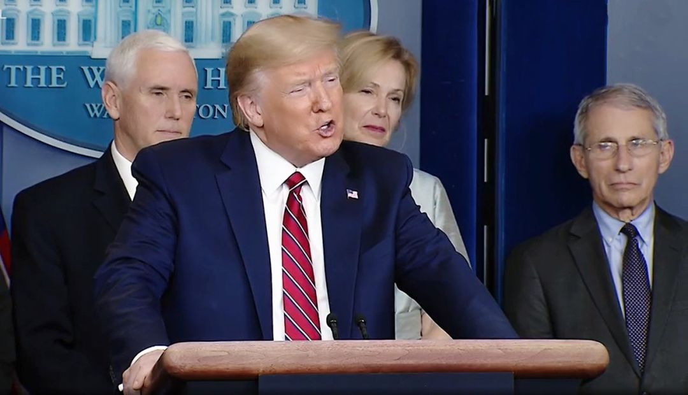

美国顶级传染病专家：特朗普对中国的指责不符合事实，但我拦不住
原文链接 备份链接 当地时间3月22日，美国顶级传染病专家、国家卫生研究院下属国家过敏症和传染病研究所所长安东尼·福奇（Anthony Fauci）接受了《科学》杂志专访，福奇表示，对特朗普有关疫情的某些表态无法认同，他说：“我总不可能跑 …

成为一个国家的 “珍宝” 并不容易，安东尼 · 福西（Anthony Fauci）似乎面对着一个尴尬局面。
安东尼 · 福西博士，现任美国国家过敏症和传染病研究所（NIAID）主任。这位被国内称为 “美版钟南山” 的人，至今已为 6 位美国总统就 HIV/AIDS 及其他众多美国国内和全球的卫生问题提供咨询工作。而近期，由于他经常反驳特朗普在美国疫情新闻发布会上的 “夸张和自私的” 即兴演讲，人们都在担心他会不会被白宫“炒鱿鱼”。
《科学》杂志与《纽约时报》在近日采访了安东尼 · 福西，谈到了近期美国针对疫情的工作，以及特朗普政府最近在疫情问题上引起的诸多争议——尤其是将新冠病毒说成是 “中国病毒” 的问题。
 图 | 安东尼 · 福西博士（来源：NIAID）
图 | 安东尼 · 福西博士（来源：NIAID）
“我感到很累。”不论是对《科学》杂志或是《纽约时报》“你还好么”的问题，福西都是如此回答的。
他表示，在上周之前，有连续四到五天里他只睡三到五个小时，剩余的时间都在处理工作。“这简直很疯狂。”现年 79 岁的福西说，“不过上周有两天，我已经睡了五个小时，所以感觉好多了。”
除了感到疲惫之外，福西其他感觉都很好，“我没有被感染。而且，据我所知，我还没有被解雇。”他笑着说道。福西认为自己还没有被解雇的原因是特朗普还能听进去他的话，“尽管我们在某些事情上有意见分歧，他还是会听。然后他走自己的路，他有自己的风格。但是，在实质性问题上，他确实听了我的建议。”
不过，目前福西已经连续两天缺席了关于疫情的媒体发布会，这顿时引爆了美国的社交媒体平台，许多人在推特上询问 “福西博士在哪儿？” 也有人猜测，因为他习惯于在发布会上反驳特朗普的发言而被 “驱逐”。比如，在特朗普把一个记者关于“缺乏外科口罩” 的问题贴上假新闻的标签之后，福奇拿起麦克风对记者说，“你没有捏造事实。我知道。”还有，当特朗普说某种药物取得良好疗效时，他会紧接着表态 “这种药还需要测试” 等。
“因为我一直在走钢丝。”福西说，“我一直在告诉总统他不想听的事情。而且在公开场合也不得不说一些与他所说的不同的话。”但他认为，关于疫情方面在实质内容上并没有异议。“关于表达方式的问题，我不会说，因为它可能导致对某个特定主题的事实产生误解。”
但对于特朗普用 “中国病毒” 这一称呼的问题，福西表示，首先自己永远不会这样叫它，而且这种说法是不应该出现的。

动图 | 传遍全网的 “福西憋笑” 动作（来源：Twitter）
在上周五的新闻发布会上，当特朗普提到 “Deep State” （深暗势力，一种流行的阴谋论）时，福西把手放到了脸上，随后该动作被网友剪辑发到网上引发了广泛传播。当《科学》杂志问及“是否会因为所做的事情受到白宫批评” 时，他对此表示不予评论。
《科学》还问了福西一些与中国相关的问题，比如他怎样看特朗普在记者会上说 “从 2 月 2 日开始的对中国的旅行禁令，对减缓该病毒向美国的传播产生了重大影响”，同时还指责中国“应该提前 3~4 个月告诉美国新冠病毒疫情” 的说法。
对此，福西的回答略显无奈：“你能指望我还做些什么呢？”但记者表示，“你是白宫里代表科学、真相和事实的人，但一些白宫发出来的声音却并不是真相和属实的。”
福西解释道：“在特朗普发表了那些中国应该提前 3~4 个月告诉美国新冠疫情的言论后，我就已经和相关人员表示这种说法与事实不一致。（中国暴发疫情前）2~3 个月是去年的 9 月。”他认为这些工作人员随后应该会告诉特朗普要说话谨慎，不要再这么说。
“但我总不可能跳到麦克风前，把他推下去吧。”福西吐槽说，“好吧，他既然已经说了，那就让我们下次尽量作出更正。”
图 | 特朗普与福西在新闻发布会上（来源：Twitter）
此外，他还表示了对类似 “中国在商场门口进行体温测量等举措” 的认可。福西说：“我们应该考虑这些措施，我也会在下一次疫情工作组的会议上把这件事提出来，并看看是否有某种后勤上的、官僚主义的原因导致这种值得借鉴的措施无法完成。”
总而言之，对于自己在美国防疫工作上的努力，福西表示 “我会持续不断地推动”。对于美国是否已经为“大流行” 病做好准备，以及是否哪些地方出错导致了失败的问题，他说：“我认为，我们必须等到结束后再回头看才能回答。这就像战争的迷雾一般，只有当战争结束后，才可以回头说——哇，这个计划虽然很棒，但一旦他们开始向我们投掷手榴弹，它就没有奏效。”
福西认为，当下重要的事情是“向前看”，为更大范围的积极动员做准备。不过鉴于特朗普对美国经济，尤其是股市的重视程度，白宫未来的防疫措施究竟会向哪个方向发展，似乎一切还未可知。
-End-
参考：
https://www.nytimes.com/2020/03/21/opinion/sunday/fauci-coronavirus-trump.html
https://twitter.com/WhiteHouse/status/1241029433990905857
https://www.niaid.nih.gov/about/director

原文链接 备份链接 当地时间3月22日，美国顶级传染病专家、国家卫生研究院下属国家过敏症和传染病研究所所长安东尼·福奇（Anthony Fauci）接受了《科学》杂志专访，福奇表示，对特朗普有关疫情的某些表态无法认同，他说：“我总不可能跑 …
原文链接 备份链接 当人类生存的主题被病毒、大流行病裹挟时，在白宫坐镇的特朗普、民间看好的疾病专家安东尼·福西和美联储主席鲍威尔纷纷出招，是老旧的套路还是定海神针，还未可知 文 |《财经》特派记者 金焱 发自华盛顿 编辑 | 苏琦 3 …
原文链接 备份链接 事态还在发展，一日多变，州、县、市都发了紧急状态令，3月18日，本地所有餐馆被要求关闭堂吃，一大批员工失业，生计成为问题，政府救济在途。黎明之前将会有一段至暗时刻。我们也只有就地卧倒，保护自己，共渡难关了。 文 | …
原文链接 备份链接 美国约翰斯•霍普金斯大学统计显示，截至当地时间21日13时，美国新冠肺炎确诊病例已超过2万例，死亡278例。三天之内，全美确诊病例从1万例增至2万例。而更有研究分析，美国疫情的峰值最早可能要到5月份才能到来。 美国确 …
原文链接 备份链接 图片来源：视觉中国 记者：崔璞玉 “ 根据该计划，政府将向个人发放最多达1200美元的现金，针对夫妻的发放额为2400美元，每个孩子的现金额为500美元。 ” 美东时间3月19日，参议院多数党领袖米奇·麦康奈 …